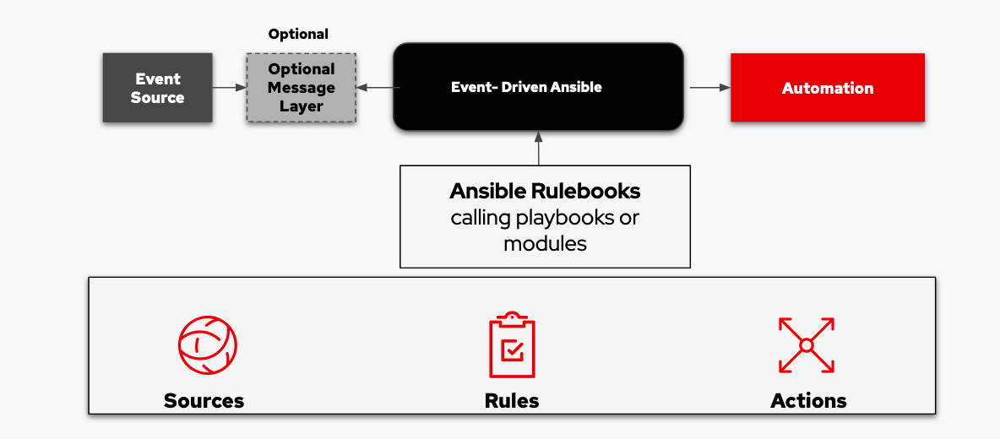

Introducing the Event-Driven Ansible developer preview
Today at AnsibleFest 2022, Red Hat announced an exciting new developer
preview for Event-Driven Ansible. Most customers are on a journey toward
full end-to-end automation and there are many paths you take along this
journey. Event-Driven Ansible is a new way to enhance and expand
automation. It improves IT speed and agility, while enabling consistency
and resilience.
By fully automating necessary but routine tasks, you and your team will
have more time to focus on interesting engineering challenges and new
innovations. For example, what if you no longer needed to pause critical
work to manually add technical detail to a service ticket? Or address
a user password reset request? Or reset a router as a first
troubleshooting step? With Event-Driven Ansible, the friction in your
day can be dramatically reduced, leaving more time to work on important
projects, with some added work-life balance.
Why a developer preview?
The Event-Driven Ansible technology was developed by Red Hat and is
available on GitHub
as a developer preview. Community input is essential. Since we are
building a solution to best meet your needs, we're providing an
opportunity for you to advocate for those needs. We ask that both
technology providers and end users give it a try and tell us what you
think. There are several ways you can give feedback - via comments in
GitHub, during our office hours on November 16,
2022,
or via the
event-driven-automation@redhat.com
email.
Event-driven automation is part of an ecosystem
Any event-driven solution must be able to work within multi-vendor
environments. So, we ask technology partners to not only try the
Event-Driven Ansible developer preview, but also begin building Ansible
Content Collections so that our solutions complement each other and make
it faster and easier for joint customers to use them.
Designed for simplicity
Event-Driven Ansible is designed for simplicity and flexibility, much
like we offer today in Red Hat Ansible Automation Platform. What do we
mean by this for Event-Driven Ansible?
Until now, most event driven and "self-healing" automation projects have
been complex and time-consuming to deliver because much of the solution
is custom developed to meet a singular need. For example, automatically
shut down network firewalls when certain activity patterns occur, then
notify responsible teams. This is a great and essential solution--for
this one need.
Event-Driven Ansible is designed to be more flexible with faster and
more cost-effective ways to stand up new automation projects across any
use case. By writing an Ansible Rulebook (similar to Ansible Playbooks,
but more oriented to "if-then" scenarios) and allowing Event-Driven
Ansible to subscribe to an event listening source, your teams can more
quickly and easily automate a variety of tasks across the organization.
Think of it like a crescent wrench: a single tool that is easy to adjust
to different size bolts. Same idea here - a single automation tool that
addresses a broad variety of IT automation needs.
What is Event-Driven Ansible?
Event-Driven Ansible is a highly scalable, flexible automation
capability that works with event sources such as other software
vendors' monitoring tools. In an automatic remediation use case, these
vendor tools watch your IT solutions and identify "events," such as an
outage. Event-Driven Ansible documents your team's technical information
on how you want to act on the identified event (an outage in our
example) as rules in Ansible Rulebooks. When this event (outage) occurs,
Event-Driven Ansible matches the rule to the "event" (the outage), and
automatically implements the documented changes or response in the
rulebook to handle the event. In our outage example, this may be an
action such as resetting or rebooting the non-responding asset.

There are three major building blocks in the Event-Driven Ansible model,
sources, rules and actions that play key roles in completing the
workflow described above:
-
Sources are third party vendor tools that provide the events.
They define and identify where events occur, then pass them to
Event-Driven Ansible. Current source support includes Prometheus,
Sensu, Red Hat solutions, webhooks and Kafka, as well as custom
"bring your own" sources.
-
Rules document your desired handling of the event via Ansible
Rulebooks. They use familiar YAML-like structures and follow an "if
this then that" model. Ansible Rulebooks may call Ansible Playbooks
or have direct module execution functions.
-
Actions are the result of executing the Ansible Rulebook's
instructions when the event occurs.
More about integrations
Event-Driven Ansible allows you to subscribe to sources, listen for
events and then act on those events. Currently we have a number of
source plugins that have been created and can be used.
We are enabling events from partner technologies by providing event
source plugins for webhooks and for Kafka. Many partner tools can
utilize Kafka and webhooks for integration into the Event-Driven Ansible
ecosystem. Once Event-Driven Ansible receives events from these sources,
it can allocate rules against them from the instructions you have
specified in Ansible Rulebooks. Technology providers can also develop
event source plugins, which more directly integrate their tools with
Event-Driven Ansible and distribute them via Content Collections.
Open source plugins are also supported. These plugins enable
Event-Driven Ansible to process a number of different events. They
include:
- Kafka for event streams
- webhooks
- watchdog, a file system watcher
- url_check to check the status of a url
- Range, an event generation plugin
- File, which loads facts from YAML
- Roadmap integrations support processing from the cloud service
providers
In addition to all these integrations that enable events to prompt
action, it is important to note that Red Hat Ansible Automation Platform
does not require an agent to be present on a target solution receiving
an automated action. This is convenient and ideal for technologies that
cannot host an agent, such as an edge device or network router--- and it
makes Event-Driven Ansible a simpler solution to
deploy.
Starting small, thinking big: recommended use cases
Red Hat often recommends a "start small, think big" approach to growing
your automation maturity and Even-Driven Ansible is no exception. We
think IT service management is a great place to start and we suggest you
look for simple tasks that get repeated very often to see the most
benefit.
You can use Event-Driven Ansible Rulebooks to enhance service tickets,
do basic remediation of tickets and issues and also manage the variety
of end-user requests that you receive everyday, like password resets.
Additionally, you can automate use cases across all of the common areas
where you automate today -- infrastructure, network, cloud, security,
and edge -- for service management and other tasks. Once you get the
basics down, growing the number, scope and sophistication of your
Ansible Rulebooks is easy.
Getting started and sharing feedback
Start by reviewing this web page where you will
find more details on Event-Driven Ansible and can access additional
resources such as a self-paced lab, how-to-video and more details about
this solution. You will also find a registration link to our first
Office Hours event, where you can ask questions and learn tips and
techniques.
Once you have some familiarity, use the developer preview code found
here. In summary,
your basic steps will be to download and install Event-Driven Ansible
from the GitHub repository, configure sources of events so Event-Driven
Ansible is subscribed, write your Ansible Rulebook(s) and start
listening to events.
As a community project, we ask for your feedback through GitHub
comments, on our Office Hours, or via email at
event-driven-automation@redhat.com.
Looking ahead for Event-Driven Ansible
While this technology is a community project, we have bigger ideas to
shape this capability to meet your needs. In addition, we hope to
integrate Event-Driven Ansible as a component in Red Hat Ansible
Automation Platform in the future. With Red Hat Ansible Automation
Platform, you could gain access to all the platform has to offer,
including RBAC and other controls, and the ability to use a single
automation platform even more flexibly for both manually-initiated
automation via Ansible Playbooks and also for your fully automated
actions via Ansible Rulebooks.
I hope this has provided a good overview of Event-Driven Ansible.